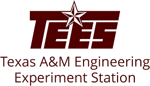

- Conducted experiments and analyzed results, to find the features to improve tactical decision-making in the simulation environment
- Enhanced military simulation data logging by automating data capture and refining logs, enhancing efficiency by 70% and enabling better analysis of eye-tracking and decision-making behavior
Professional Experience

- Architected a multi-region Azure infrastructure with 99.99% uptime, implementing load balancing for 1M daily transactions, resulting in less than one hour of downtime annually
- Secured services using Client Certificate-based authentication and Azure Key Vaults enhancing data protection
- Enhanced cloud security by implementing secure access control through IAM, configuring RBAC policies, and setting up Network Security Groups (NSG) for VNet and Subnet, along with private endpoints for secure communication
- Developed interactive data dashboards using Azure Monitor, Log Analytics reducing project reporting time by 30% and improving executive decision-making by 40%
- Optimized cloud spending by implementing Azure Reserved Instances and Autoscaling, reducing costs by 25%
- Collaborated with cross-functional teams to interpret and implement business requirements, translating complex business problems into actionable technical documentation, which improved project clarity and execution

- Enhanced military training simulation stability by reducing system downtime by 30% through refining C# code and integrating multi-modal features like auditory messages and visual eye tracking

- Led migration of 6 BizTalk applications to Azure by evaluating BizTalk Migrator vs. manual re-architecture, ensuring compatibility and scalability, securing a contract for 100 additional applications
- Automated cloud deployments using CI/CD pipelines in Azure DevOps, integrating Bicep, YAML, Version control, and Infrastructure as Code (IaC) to reduce deployment time by 90%, ensuring infrastructure consistency and security best practices
- Built scalable, cloud-native procurement applications on Azure using C# .NET, implementing Azure Functions for serverless computing and API Management for secure, high-performance integrations between COUPA and SAP S/4 HANA
- Reduced manual effort in data processing tasks by 60% using Azure Logic Apps and exposed APIs via API Management and Application Gateway
- Reconfigured and upgraded 150 applications from BizTalk 2016 to 2020, improving system reliability and reducing downtime
- Optimized MS SQL database architecture by refactoring stored procedures and restructuring tables reducing query latency by 30%